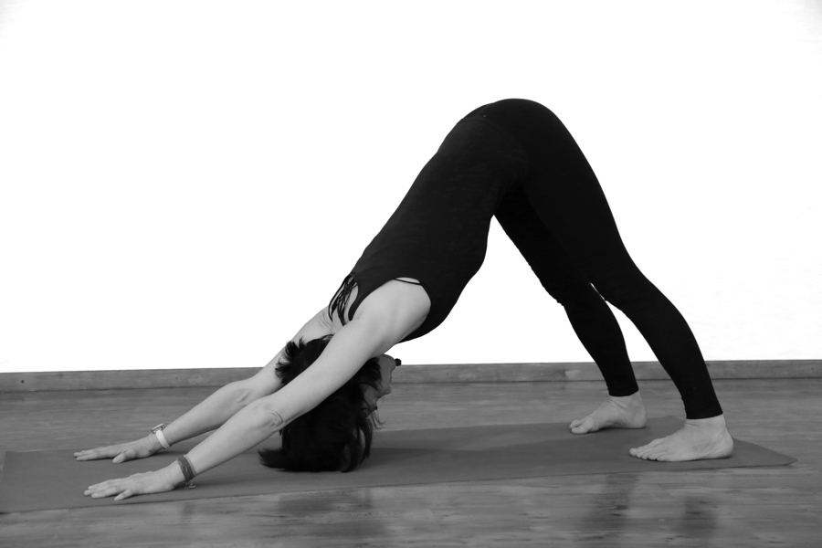

С чего начать заниматься йогой? Ниже вы найдёте описание 10 важнейших асан йоги. Всего на поочередное выполнение всех асан уйдёт от 15 до 30 минут в зависимости от вашего уровня подготовки. Если вы совсем начинающий и раньше не занимались даже физкультурой, находитесь в каждой асане одну минуту или меньше. Постепенно доведите время до 3 минут в каждой позе. Помните, что йога это не спорт и асаны никогда не делаются через силу или боль. Слушайте своё тело, относитесь к себе с вниманием, любовью и уважением. Секрет успеха в йоге: постепенность и регулярность. Маленькие, почти незаметные, но ежедневные усилия приведут вас к цели быстрее, чем интенсивные тренировки раз в месяц.
Встаньте прямо, ноги вместе, плечи расслабленны. Вес равномерно распределён на обе стопы. Руки свободно опущены вниз. Сделайте глубокий вдох и вместе со вдохом поднимите руки вверх с ладонями, обращёнными внутрь. Тянитесь кончиками пальцев к небу, дышите глубоко.
Встаньте на четвереньки. Пройдитесь руками на несколько сантиметров вперёд и широко расставьте пальцы, прижимая ладони к коврику. Медленно выпрямляйте ноги, опираясь на пальцы ног и подушки ступней, поднимая таз вверх. Ваше тело станет похожим на букву Л. Ноги должны быть на ширине плеч, колени слегка согнуты. Держите положение тела в течение трёх циклов дыхания.
Встаньте с широко расставленными ногами. Разверните правую стопу на 90 градусов, а левую стопу на 45 градусов в том же направлении. Поднесите руки к бёдрам и расслабьте плечи. Затем вытяните руки в стороны ладонями вниз. Согните правое колено на 90 градусов, но не вынося колено дальше стопы. Посмотрите на правую ладонь. Находитесь в этой позе одну минуту. Повторите то же самое в другую сторону.
Встаньте прямо, руки по швам. Переместите вес тела на левую ногу, правую стопу положите на внутреннюю часть левого бёдра. Таз держите прямо, а лучше подайте его чуть вперёд. После того как поймаете равновесие, сложите ладони перед грудью в молитвенном положении. На вдохе вытяните руки вверх, ладони разъединены и смотрят друг на друга. Оставайтесь в этом положении 30 секунд. Сделайте то же самое на другую сторону.
Лягте на спину, согните ноги в коленях, стопы поставьте рядом с ягодицами. Руки лежат на полу вдоль тела ладонями вниз. Во время выдоха, поднимите таз вверх, активно отталкиваясь ногами от пола. Лежащие на полу руки сцепите ладонями в замок прямо под тазом. Отталкивайтесь руками поднимая таз вверх, пока бёдра не будут параллельно полу. Подбородок при этом прижимается к груди. Держите это положение одну минуту.
Лягте на на живот лицом вниз, поставьте ладони на пол под плечами. Ноги вытяните. Тянитесь пальцами ног назад как можно сильнее. Отталкиваясь руками от пола поднимите корпус тела одновременно вытягивая позвоночник и вдавливая таз и бедра в пол. Расслабьтесь и повторите еще раз.